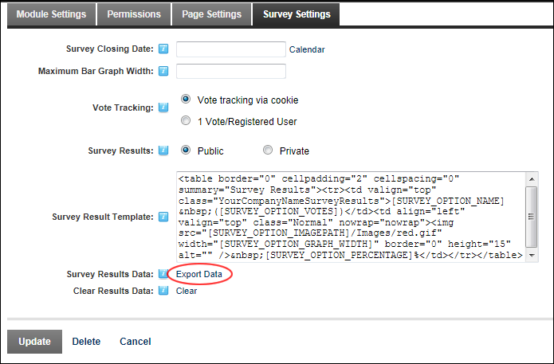

Exporting Survey Results Data
How to export the votes of registered users submitted to the Survey module. Results are saved as a csv (comma separated values) file.
-
- Select the Survey Settings tab.
- At Survey Results Data, click the Export Data link.

- Save the file to your computer as required.